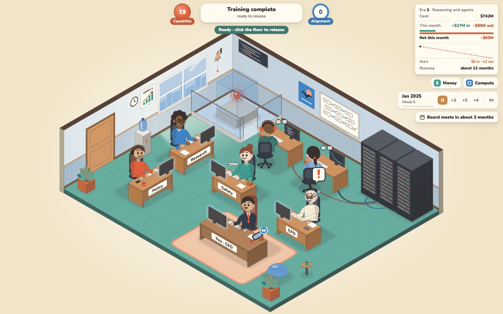
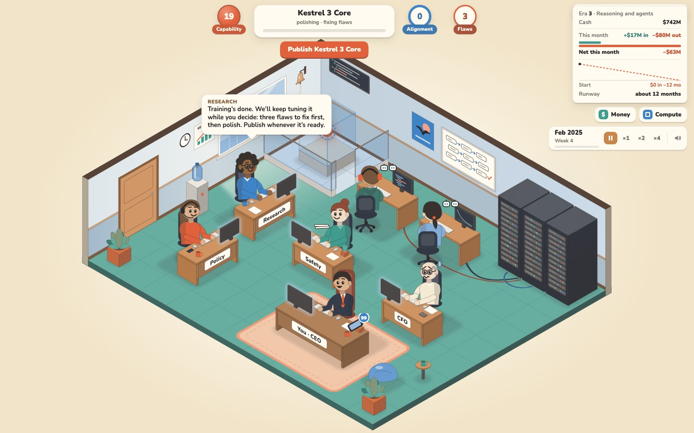
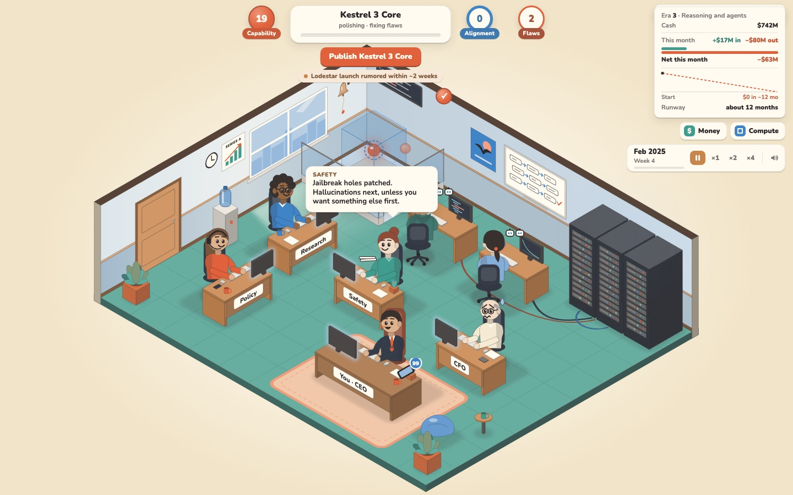
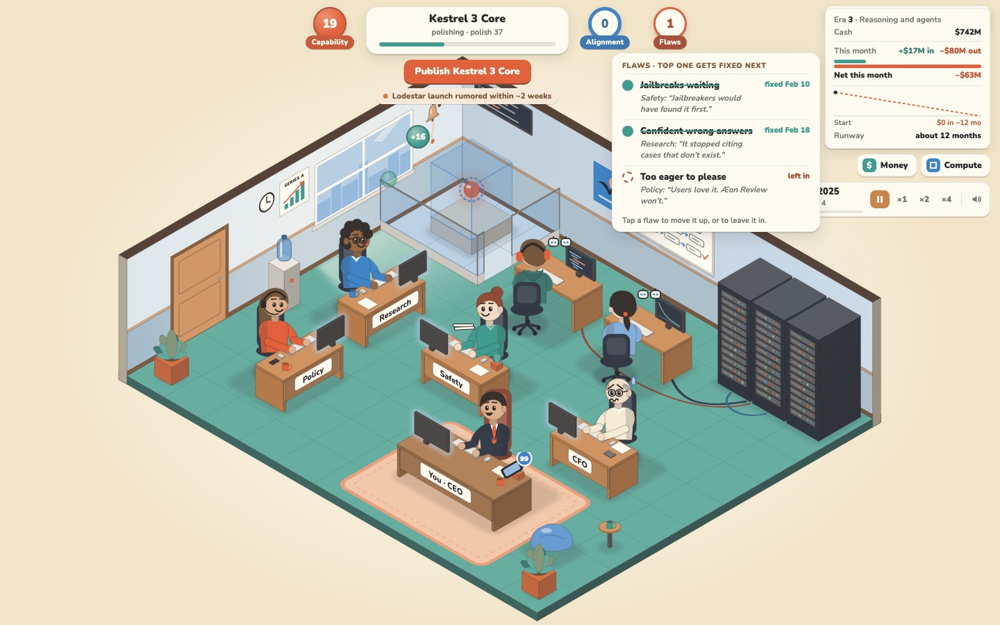
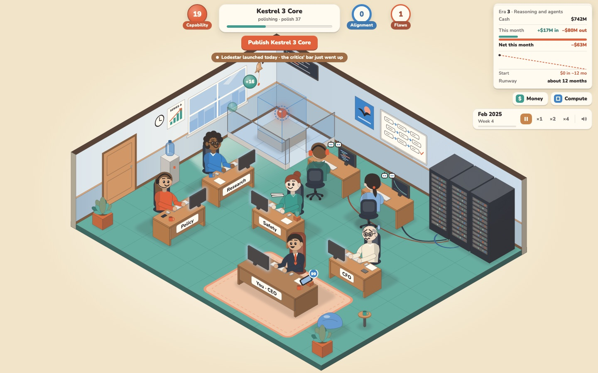
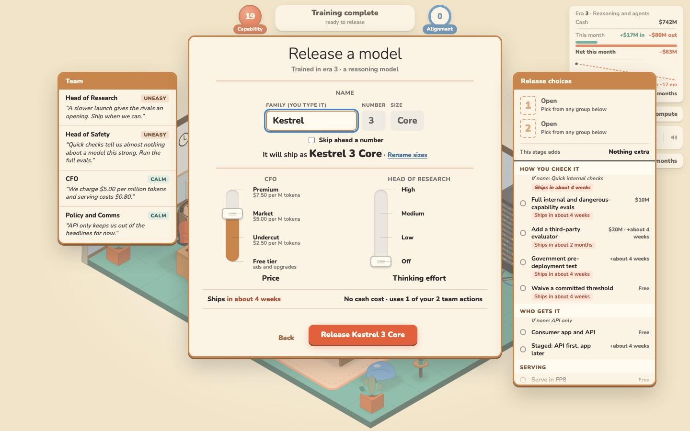
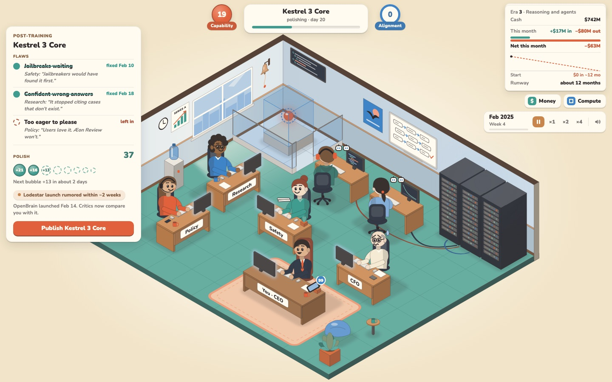
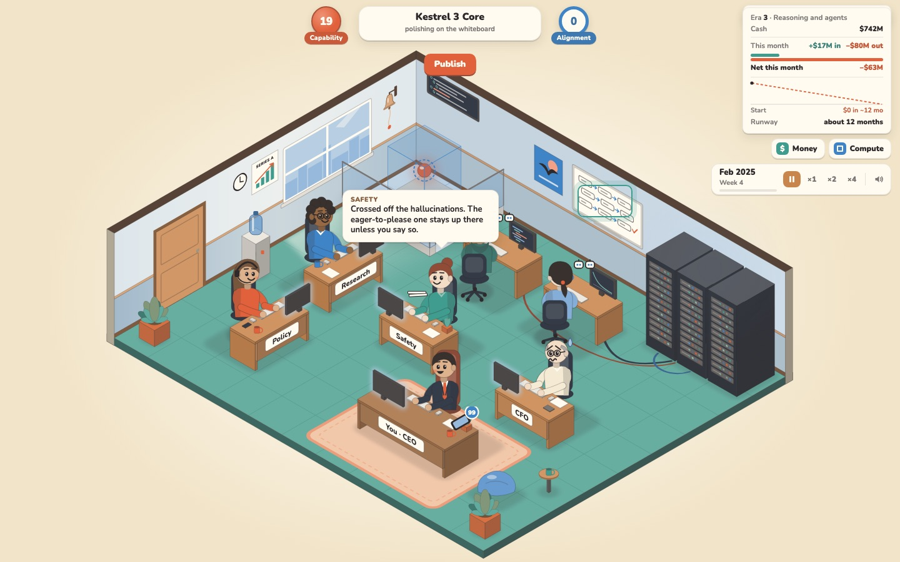
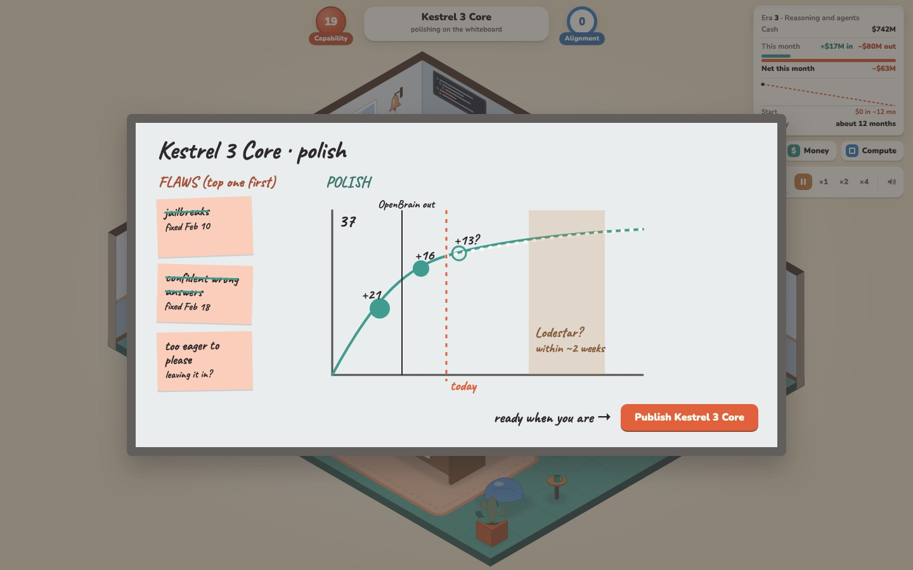
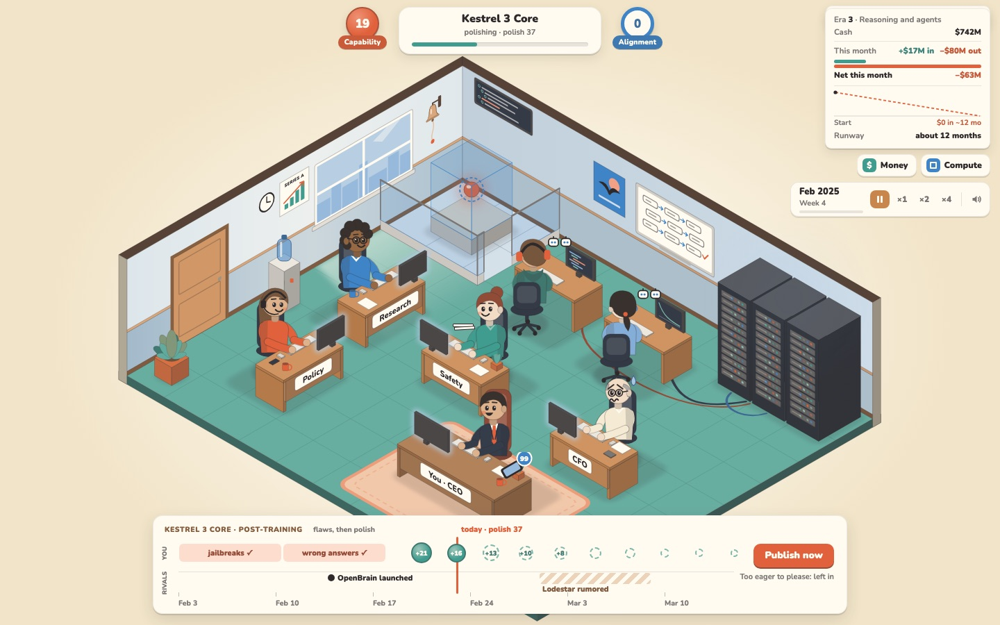

Four ways to show a trained model being polished until you press Publish. Every option shows the same moment, on the real game at 1440 × 900.
Era 3 · Kestrel 3 Core20 days into polishingJailbreaks and wrong answers fixedToo eager to please: left inPolish 37 of 100 · bubbles +21, +16OpenBrain launched · Lodestar rumored
The numbers come from the proposed rule (a quarter of a month per flaw, then a bubble every 2½ days worth a fifth of what's missing). The game doesn't produce them yet; they're example values.

Today, for comparison
Training ends, the pill says "Training complete · ready to release", and the model waits unchanged until you open Release from the floor menu.
A
Game Dev Tycoon's bug-fixing phase
What Game Dev Tycoon itself doesRecommended
The project pill keeps the job: "polishing · polish 37" with a teal bar that fills as bubbles land. A Flaws badge joins Capability and Alignment and counts down. Publish sits under the pill, with the rival rumor under it.
WhereThe HUD you already watch during training. Nothing new opens.
BubblesCoral bubbles fly from Safety into the Flaws badge; teal polish bubbles fly from Research into the pill, each labelled with its gain.
Flaw orderTap the Flaws badge to open the list, move one up, or leave it in.
How it plays, in order

1Training ends. Research introduces polishing the first time. Flaws: 3.

2A flaw is fixed. A check bubble flies into the badge; Safety says what's next.

3Tap Flaws to reorder or leave one in. Advisors say what each costs, in their words.4Polish bubbles arrive, each smaller than the last.

5Lodestar lands. The chip turns solid: the critics' bar just went up.

6Publish opens today's release dialog, unchanged.
B
A post-training card on the side

Everything in one card while the model polishes: flaws with advisor quotes, polish 37 with a row of past and coming bubbles (shrinking), "next bubble +13 in about 2 days", the rival lines, and Publish. It covers the Policy corner of the office.
Good forShowing the why in one glance: what you got, what's coming, who's about to land.
CostAn always-open panel during play, which you've steered away from before ("decisions open on demand").
C
The whiteboard is the post-training board
Experimental · in the world

1In the office: the whiteboard is ringed, and staff speak from their desks as things get crossed off.

2Click it: the board opens flat, like the paperwork. Sticky notes for flaws, a hand-drawn curve that flattens, the rival window shaded.
Good forThe same in-world feel as the paperwork you approved; the flattening curve says "less and less" without numbers.
CostHidden until you click the board, so the day-to-day bubbles need the HUD anyway. Handwriting uses a new font (Caveat).
D
A calendar strip of what waiting buys
Experimental · shows the future

Two lanes on one calendar. Top: your flaw fixes, then polish bubbles shrinking day by day (filled up to today, dashed after). Bottom: rival launches, with the rumor as a hatched window. The trade-off is laid out as distance: bubbles getting tiny while the Lodestar window gets close.
Good forThe clearest picture of "when do I stop": you can see the next bubbles are small and the rival window is near.
CostShows future bubbles exactly, which removes some guesswork. Could instead open on demand from A's pill.
One new idea in these pictures, not agreed yet: "leave it in"
With "flaws first, then polish", keeping a flaw on purpose (the thumbs-up users, say) would block polish forever. So every mock lets you mark a flaw "left in", and polish starts once the rest are fixed. Game Dev Tycoon players do the same with bugs. Say if you want it; without it, polish only starts when every flaw is gone.
Mix and match
The parts are separable. My pick is A for the everyday view, with D's strip opening when you click the pill, for the moment you're deciding whether to stop.